Boss（Veltharis）C7 躍起與落地：墜王之躍（二階段）
還沒接進遊戲。起手：右手把劍從肩上提起來、往後放到背上斜掛（握柄在右肩後上方、劍身斜斜往下經過背後到左腰後面），放手；蹲下、停住蓄力（兩手往後擺，停著時再往下壓一點、手再往後拉），腳一蹬、兩手往前上甩，離地。騰空 0.8 秒：遊戲把他從起跳點直線移到落點，高度畫在圖裡（最高約 90px；地上的影子由程式畫，預覽裡的黑影是示意）；先往上、收腿，落點鎖定時身體往前傾、右手收拳（手肘往後上拉、拳頭留在右肩前、下巴的高度），往下掉時左腳往前伸、右膝往下。落地＝判定：右膝跪地、左腳踩在前面（和跪地的姿勢同一套腿），整個人壓低，右拳砸在身前右側的地面；衝擊波由程式畫。拳頭停在地上一會兒，再站起來，右手往右肩後面握住背上的劍柄，把劍往上拔出來、從頭上方往前繞、立在右肩前、放回肩上，右腳、左腳依序收回來。四個方向：朝下、朝右、朝上、朝左（朝左不是鏡像）。
關鍵姿勢（四個方向，2 倍）
墜王之躍的關鍵姿勢（從精靈圖直接切出來的）
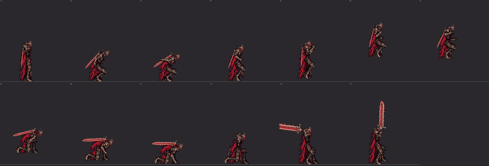
側面 3 倍：劍掛在背上、蹲下蓄力、蹬地、離地、最高點、鎖定、往下掉、落地砸地、握劍柄、拔劍、舉過頭
遊戲裡會看到的順序
墜王之躍（原地看，地上的黑影是示意：遊戲由程式畫）：扛劍站著 → 劍收到背上 → 蹲下蓄力 → 起跳、騰空 0.8 秒 → 落地右拳砸地（判定）→ 收招 1.0 秒（從背上拔劍、放回肩上）→ 扛劍站著
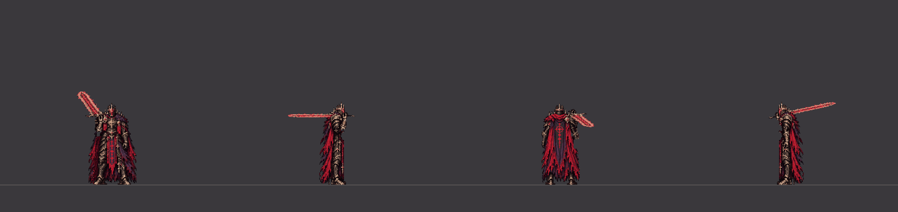
四個方向（2 倍）
朝下（60fps）朝右（60fps）朝上（60fps）朝左（60fps）墜王之躍（照遊戲的位置：騰空的 0.8 秒往前移 240 px，實際距離看主角在哪；1 倍）
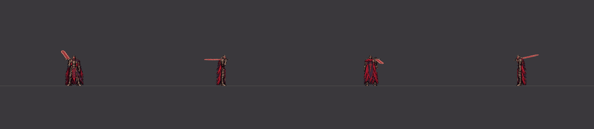
四個方向（1 倍）
朝下（60fps）朝右（60fps）朝上（60fps）朝左（60fps）往前走時出招（從走路循環第 10 張直接接墜王之躍）
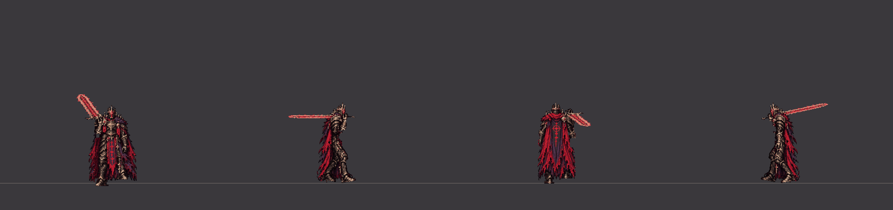
四個方向（2 倍）
朝下（60fps）朝右（60fps）朝上（60fps）朝左（60fps）落地砸地的那一刻被完美彈返：被彈開 1.2 秒（站起來、從背上拔劍）→ 扛劍站著
四個方向（2 倍）
朝下（60fps）朝右（60fps）朝上（60fps）朝左（60fps）
握劍的手（放大 4 倍）
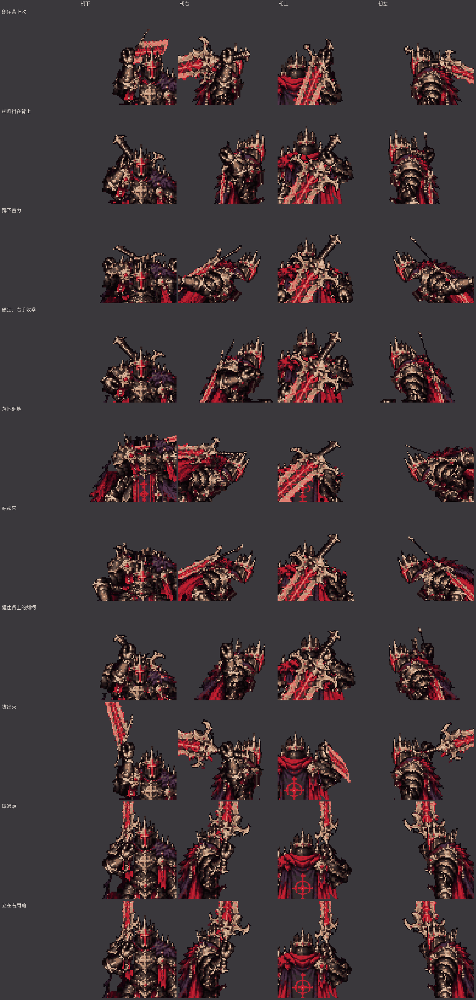
劍往背上收、劍斜掛在背上、蹲下蓄力、鎖定：右手收拳、落地砸地、站起來、握住背上的劍柄、拔出來、舉過頭、立在右肩前
側面的腿（只畫腿，綠線＝靠鏡頭的右腿，藍線＝左腿；每一張，騰空時照離地的高度）
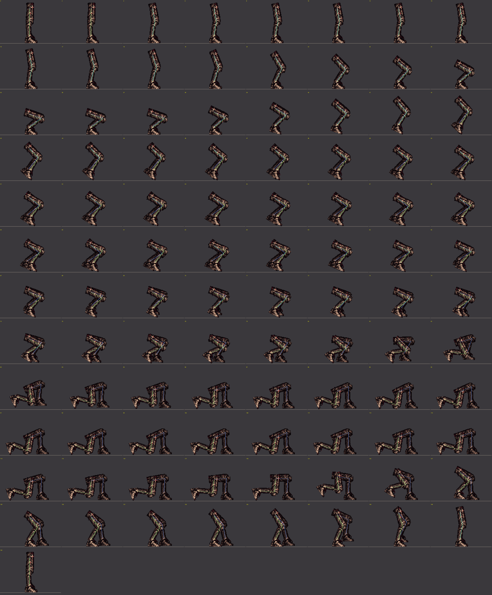
墜王之躍（C7 躍起與落地，二階段）（每一張）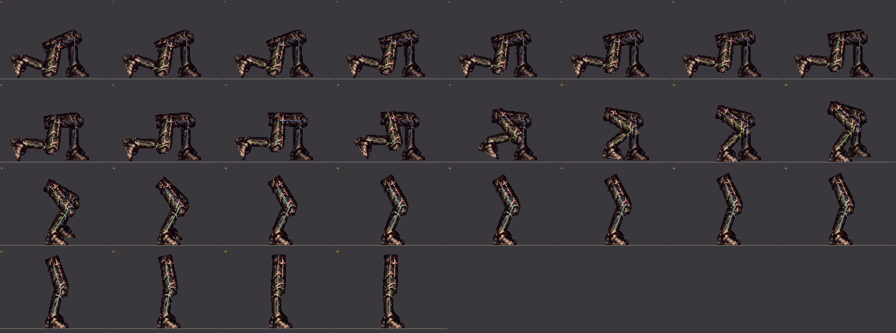
墜王之躍被彈開（每一張）
逐張
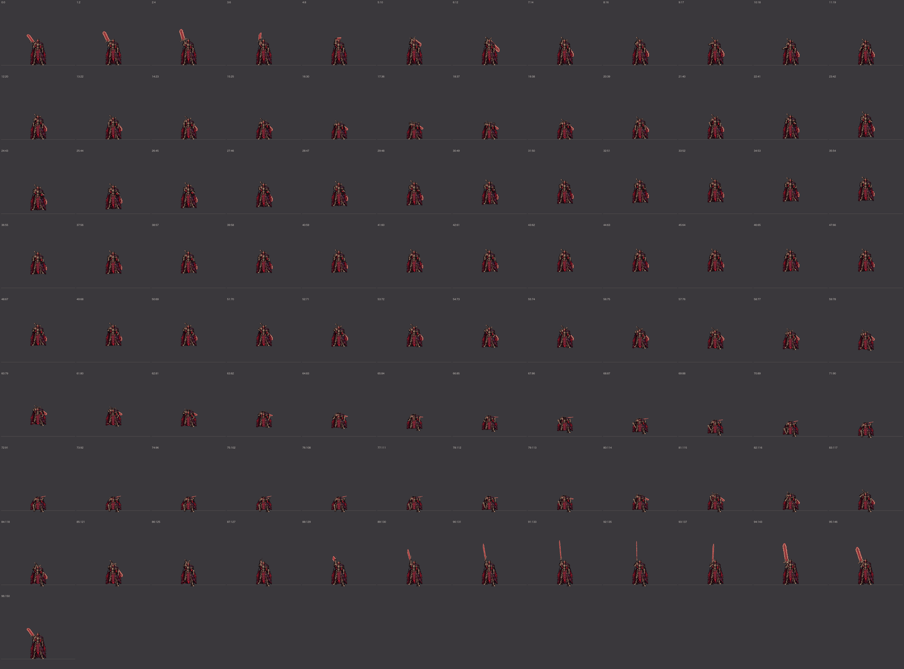
墜王之躍（C7 躍起與落地，二階段） 朝下（第幾張：從出招開始的第幾個戰鬥幀）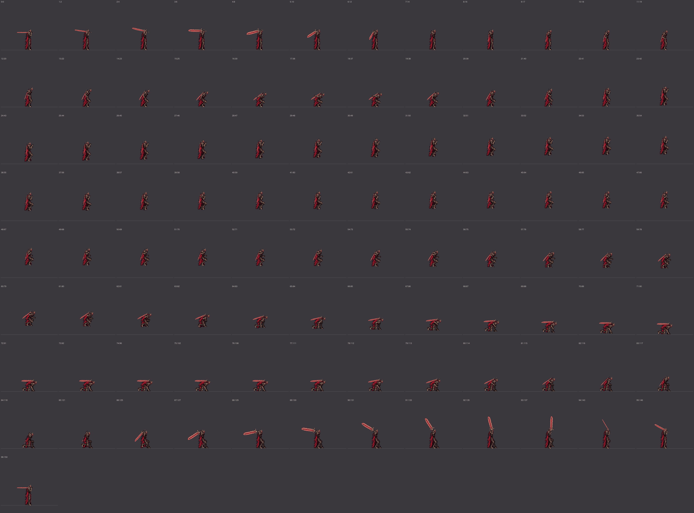
墜王之躍（C7 躍起與落地，二階段） 朝右（第幾張：從出招開始的第幾個戰鬥幀）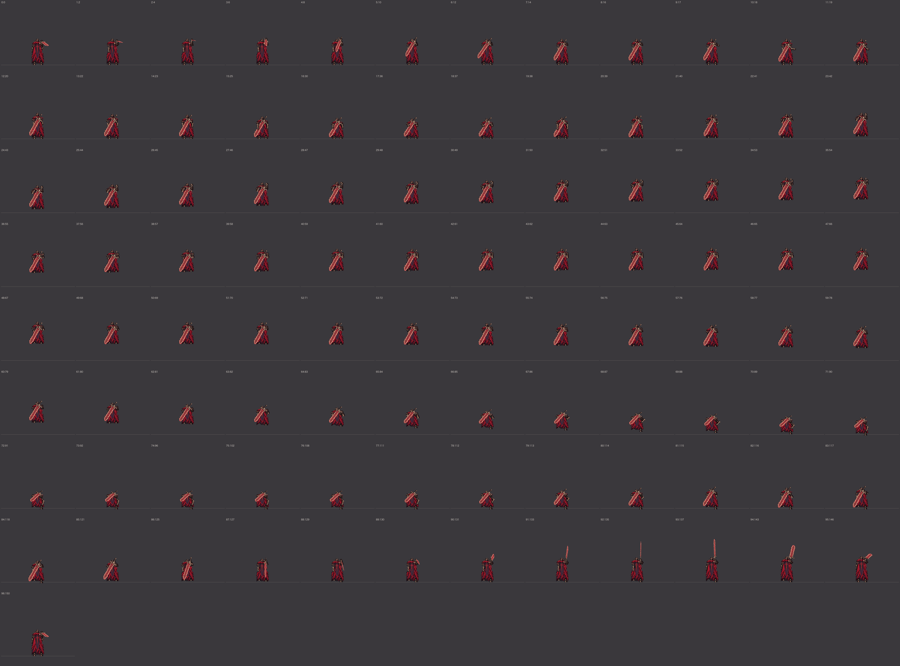
墜王之躍（C7 躍起與落地，二階段） 朝上（第幾張：從出招開始的第幾個戰鬥幀）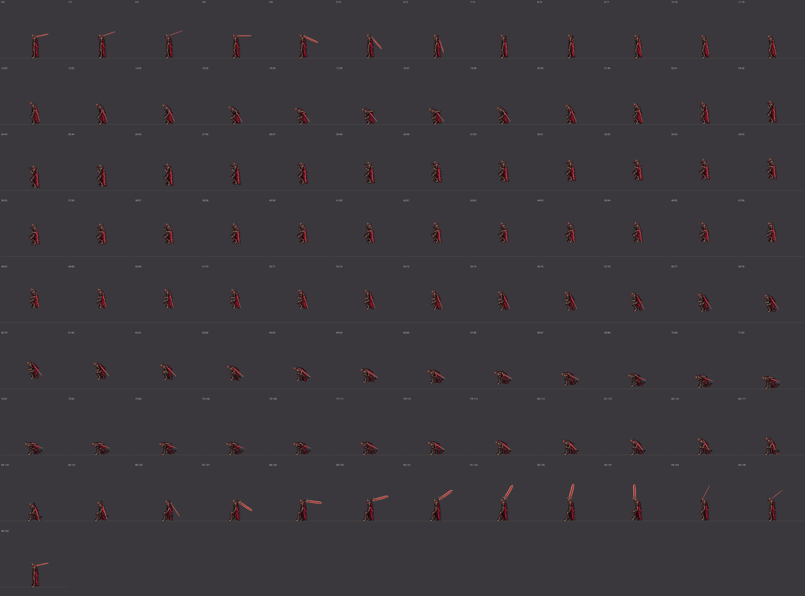
墜王之躍（C7 躍起與落地，二階段） 朝左（第幾張：從出招開始的第幾個戰鬥幀）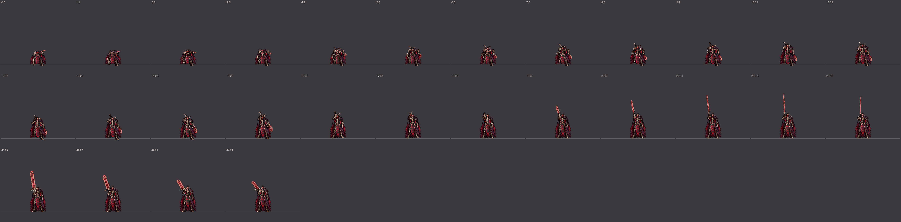
墜王之躍被彈開 朝下（第幾張：從出招開始的第幾個戰鬥幀）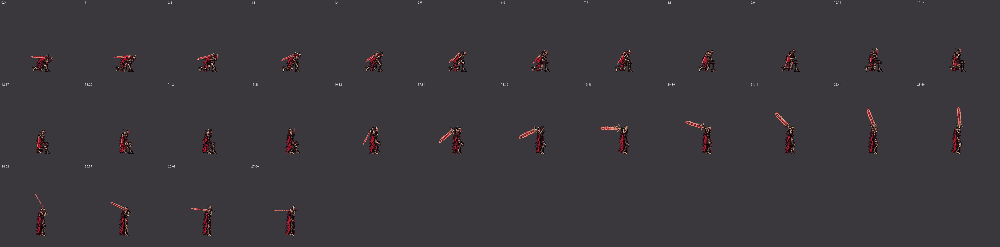
墜王之躍被彈開 朝右（第幾張：從出招開始的第幾個戰鬥幀）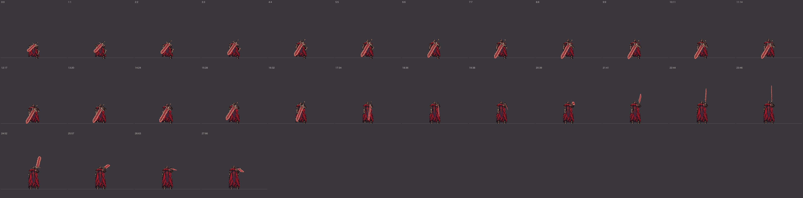
墜王之躍被彈開 朝上（第幾張：從出招開始的第幾個戰鬥幀）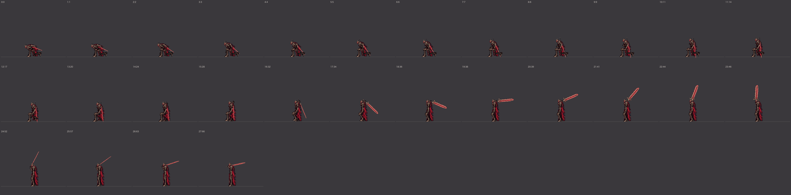
墜王之躍被彈開 朝左（第幾張：從出招開始的第幾個戰鬥幀）